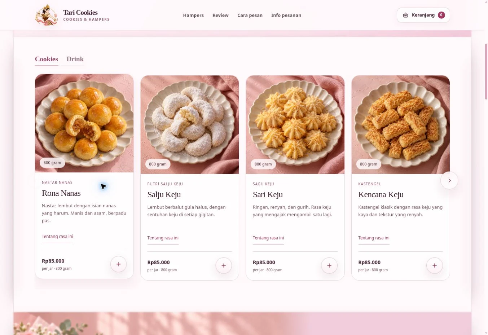
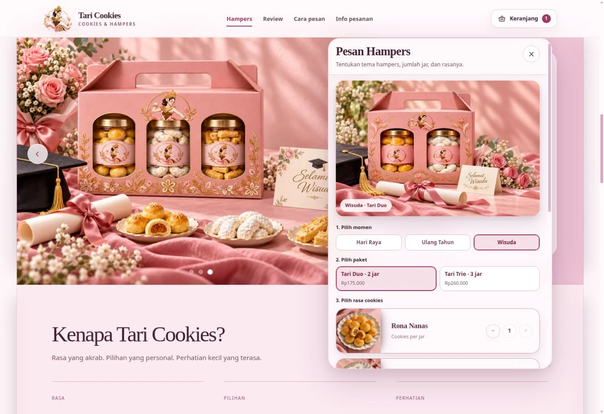
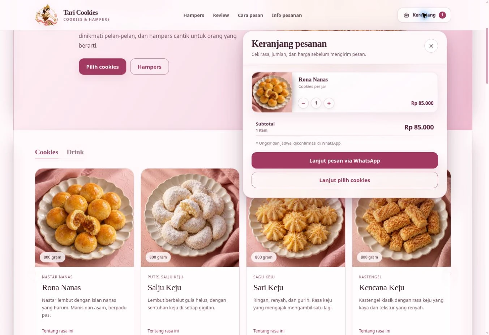
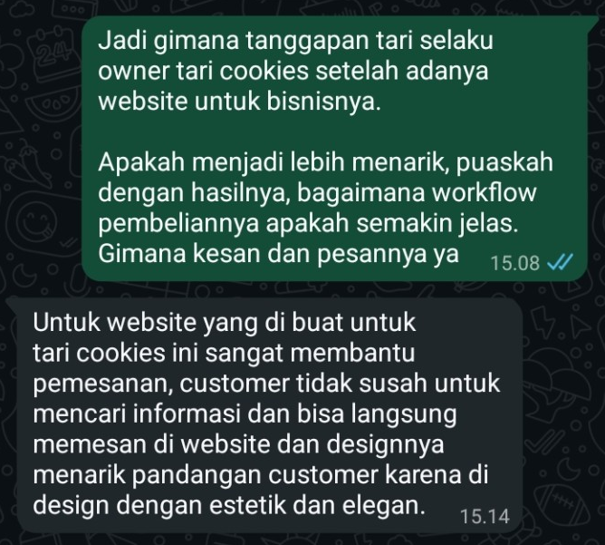

Make pre-order easier to understand.
Tari Cookies is a small cookies business using a pre-order model. The initial brief was to improve its Instagram catalogue and WhatsApp ordering journey, from finding information to the seller confirming an order.
The main audience was a first-time buyer arriving from Instagram, shopping for themselves, their family, a gift, or an occasion. They needed to understand the products, prices, sizes, pre-order schedule, and how to order.
The original catalogue already contained product, price, and size information. The early gap was less visible pre-order timing and expected receipt. Repeated questions or delayed orders were a hypothesis to investigate, not a proven result at the briefing stage.
For the customer
Understand the offer, cost, and timing; send an order with the information the seller needs.
For the business
Receive clearer order details and reduce repeated questions about products, pre-order, and the next step.
Scope: customer research, catalogue and journey design, prototype, testing plans, and revisions. Automated inventory, production, delivery, and payment processing were outside the brief.
Test the assumption before choosing the interface.
The research objective was to understand what a prospective buyer needed before feeling confident enough to order. Four questions guided it: what information they sought, what confused them, what created trust or doubt, and what would make the Instagram-to-WhatsApp transition clearer.
The team combined six interviews with eight questionnaire responses. Interviews used open questions and a catalogue walkthrough to explore the reasons behind decisions. The digital questionnaire looked for patterns in information needs and ease of finding details.
Participants were selected for experience buying food or cookies online and using social media or marketplaces to find products. Interviews took place on 18 September 2026; documentation included interview notes, questionnaire recaps, and interview video.
- Describe the last time you bought food online. How did the process work?
- What information do you need before deciding to buy?
- Have you delayed or cancelled a purchase? What made you stop?
- If you wanted to order Tari Cookies now, what would you do?
This was small, exploratory research. It identifies issues worth designing for; it does not estimate the whole market or establish a causal effect.
Visuals drew attention. Timing still raised questions.
All six interview participants first noticed photos, catalogue design, or packaging. The design did not need to start by assuming the existing catalogue was visually unsuccessful. The next priority was the information customers checked after their first impression.
The questionnaire used a 1–5 scale for ease of finding information. Pre-order information had the lowest average, while the ordering instructions were already relatively easy to find. That pointed toward clarifying timing rather than replacing everything.
Status & timing
Is it ready stock or pre-order? When is it ready, and when might it arrive?
Trust
Reviews, an active contact, location, payment, and delivery information.
Product details
Size and contents, ingredients, variants, and packaging.
| Information | Average ease of finding / 5 |
|---|---|
| How to order | 4.75 |
| Price | 4.63 |
| Products | 4.50 |
| Size | 4.50 |
| Pre-order period | 3.50 |
Give information and selection a shared home.
The initial concept centred on improving Instagram and WhatsApp. The developed solution added a website between discovery and conversation, so customers could explore the products, configure a gift, and check their choices in one place.
The catalogue keeps product imagery, flavour, size, price, and the selection control together. Ordering guidance and FAQs explain production estimates and make clear which details still need seller confirmation.
WhatsApp remains the confirmation channel. The website prepares the order summary; the customer reviews and sends it, and the seller confirms the production schedule and delivery fees.
| Research need | Design response |
|---|---|
| Clarify timing | Ordering guidance and FAQs explain pre-order and seller confirmation. |
| Reduce uncertainty about the product | A catalogue groups product details with selection controls. |
| Make the next action clear | An editable cart prepares a structured WhatsApp handoff. |
| Make gifts easier to specify | Occasion, Duo/Trio, cookie choices, and an optional greeting are explicit. |


Carry the design through to a working experience.
I allocated tasks, coordinated the group, and reviewed the work produced by the team. I created the Lo-Fi and Hi-Fi designs, built the website, and prepared the final presentation.
I also collected criticism of the website and implemented revisions. The research and coursework were collaborative; my contribution connected that work to the design and implementation.


The website uses HTML, CSS, and JavaScript and is hosted on Cloudflare Pages.
From a catalogue and chat to a guided order.
The change is visible in the journey: customers can review information and assemble their choices before opening WhatsApp. The owner’s response supports a qualitative improvement in information access and ordering clarity.
| Before the website | With the website |
|---|---|
| Information was found in the Instagram catalogue, with timing and other questions continuing in chat. | Products, ordering guidance, and FAQs can be explored in one place before the conversation. |
| The buyer described their product or gift choices through conversation. | Cookies and hampers can be selected and reviewed in a cart first. |
| The seller needed the buyer to communicate the order details. | The website prepares a structured summary for the buyer to review and send. |
| The initial design questions were based on a brief and exploratory research. | A working website and direct owner feedback provide concrete output and qualitative validation. |


These are changes to the interface and workflow. No before-and-after sales, conversion, or timed task-completion study is available.
“Sangat membantu pemesanan.”
Asked about the website’s appearance, satisfaction, and ordering workflow, the owner said it helped ordering, made information easier for customers to find, and presented the business with an aesthetic, elegant design.
Untuk website yang di buat untuk tari cookies ini sangat membantu pemesanan, customer tidak susah untuk mencari informasi dan bisa langsung memesan di website dan designnya menarik pandangan customer karena di design dengan estetik dan elegan.


The owner’s phrase “langsung memesan di website” describes the selection journey. The implemented flow still sends the prepared order to WhatsApp for seller confirmation.
A working solution, with a clear next test.
The project establishes a research-informed design, a functioning website, and positive qualitative feedback from the owner. It also shows my work across coordination, design, implementation, and revision.
The initial brief proposed targets: at least four of five participants completing each task without help, finding product details within 60 seconds, and an average ease score of at least four out of five. These were planned success criteria, not results achieved by the final website.
The next useful test would compare the old and new journeys on the same tasks: finding pre-order information, choosing a hamper, and preparing a complete order. Until then, the owner response should remain qualitative evidence, rather than a conversion claim.
Sources & context
- Tari Cookies project brief, Digital Visual Communication session 2.
- Tari Cookies session 3 research plan and findings: interviews on 18 September 2026.
- Arsafiqri contribution review dated 30 September 2026.
- Original WhatsApp screenshot supplied by Arsafiqri; the answer was confirmed as a direct response from the Tari Cookies owner. Both message bubbles remain intact, without phone interface above.